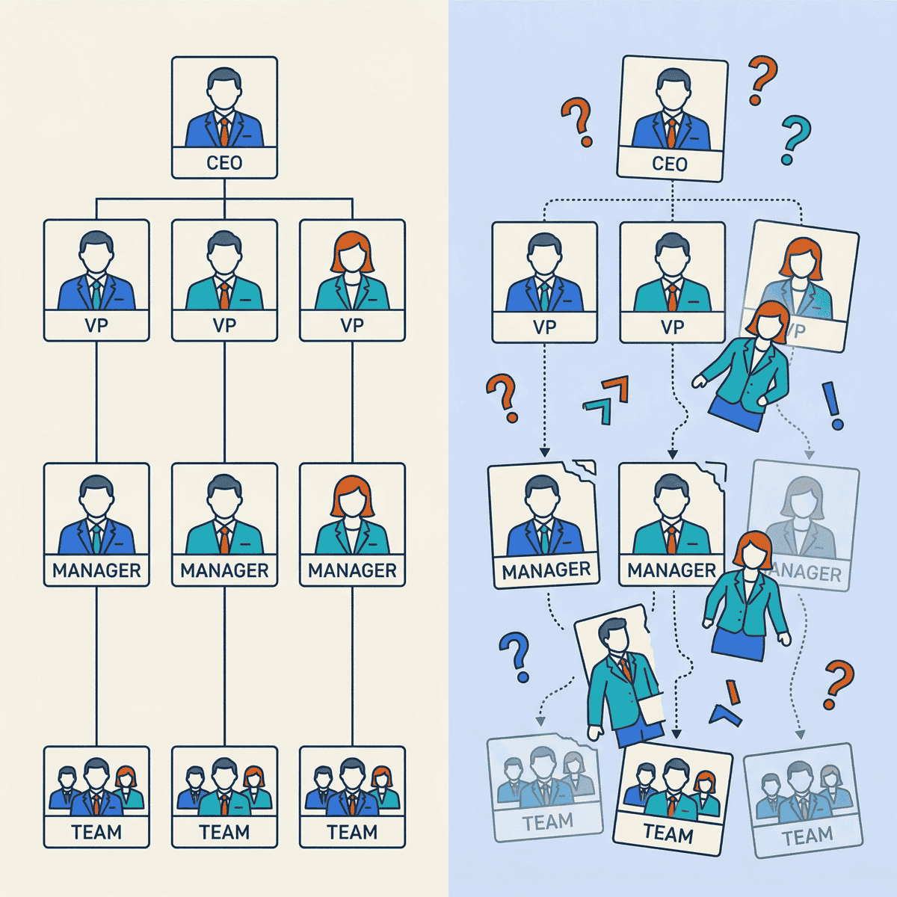

When everyone can do everything, nobody knows their job

TL;DR
- AI’s biggest organizational impact isn’t productivity—it’s role confusion
- When everyone can do everything, accountability evaporates and engagement drops
- Employees with clear roles are 53% more efficient—role clarity is a competitive advantage
- The fix: redesign ownership and accountability structures, not just adopt more AI tools
Something happened quietly in 2025. AI didn’t replace jobs. It blurred them.
Product managers started writing code. Designers built working prototypes. Engineers ran product research. Analysts created dashboards nobody asked for.
An eight-month HBR study found that task expansion—not time savings—was the dominant pattern when companies rolled out AI tools. Workers didn’t do their jobs faster. They started doing other people’s jobs too.
And 77% of employees say AI tools added to their workload. Not reduced it. Added to it.
The problem isn’t that people can do more. It’s that nobody knows who owns what anymore.
When everyone can do everything, nobody owns anything
Here’s the pattern I see in company after company.
The org chart says one thing. Reality says something different. AI gives everyone the capability to step outside their lane—and they do, with the best of intentions.
A product manager generates mock-ups in an AI tool. The design team doesn’t know which ones are approved concepts and which are rough explorations.
An engineer writes a product spec. The PM doesn’t know what’s been promised to a customer. An analyst builds a polished dashboard overnight. The data team doesn’t know which metrics are now “official.”
Each of these feels productive in isolation. Together, they create chaos.
Here’s an example from a mid-market software company. The CTO gave everyone access to AI coding assistants. Within three months, non-engineers were building internal tools, prototypes, and data pipelines. Good stuff, mostly.
But nobody knew which tools were “real” and which were experiments. Support tickets piled up for tools that had no owner. Two teams built nearly identical dashboards. The VP of Engineering told me, “We’re moving faster and slower at the same time.”
That’s the paradox of AI-enabled generalism. Speed goes up. Clarity goes down. And the longer you wait to fix the clarity problem, the harder it gets to untangle.
AI didn’t eliminate jobs. It eliminated job descriptions.
— Clarke Bishop
The data backs this up. Only 47% of employees strongly agree they know what’s expected of them at work. That’s a crisis in expectations clarity.
U.S. employee engagement sits at just 31%—a decade low. Manager engagement dropped from 30% to 27%.
Young managers under 35 saw a five-point decline. Female managers dropped seven points.
When your managers don’t know what they own, nobody else will either.
Flatter isn’t better if nobody knows who decides
Companies are responding to AI by flattening their organizations. Amazon, Moderna, and McKinsey are all cutting management layers. Moderna merged its technology and HR departments entirely. McKinsey now has 25,000 AI agents working alongside 40,000 human employees.
Salesforce CEO Marc Benioff said that we’re “the last generation” to manage only humans.
They’re not wrong about the direction. But flattening without redesigning ownership creates a different kind of problem.
Fewer managers means fewer people defining boundaries. AI agents handling routine work means humans are left with… what, exactly? If you remove the management layer but don’t redefine who makes which decisions, you’ve created an accountability vacuum. And there are fewer people to notice.
This matters more than most leaders realize. Managers drive 70% of team engagement variation, according to Gallup. When you cut the layer responsible for clarity, you cut the layer responsible for engagement.
That’s why disengaged employees cost the global economy an estimated $438 billion annually.
I’ve watched this play out at multiple companies. The reorg happens. Layers get cut. AI tools get deployed. Six months later, leadership wonders why projects are stalling and people seem confused.
The pattern is always the same. Companies reorganize for AI’s capabilities without redesigning human accountability. That’s backwards.
Role confusion is the most expensive problem you’re not tracking
Here’s what the data says about the cost of unclear ownership.
Employees with role clarity are 53% more efficient and 27% more effective than those with role ambiguity. That’s not a marginal gain. It’s the difference between a team that ships and a team that spins.
Technical debt—often a direct symptom of unclear ownership—is the top frustration for 62% of developers. That’s roughly twice the rate of any other complaint. When nobody owns the codebase clearly, shortcuts pile up. When nobody owns the AI initiative, it dies.
And 42% of companies abandoned most of their AI initiatives in 2025, up from 17% in 2024. The average org scrapped 46% of AI proof-of-concepts before production.
Those aren’t technical failures. They’re organizational failures.
When I dig into failed AI projects, the root cause is almost never the model or the data pipeline. It’s that nobody owned the outcome.
The data science team built it. The business team didn’t adopt it. And leadership couldn’t tell you who was responsible for either decision.
Here’s a question I ask every CEO I work with: “Who owns your AI strategy?” Not who sponsors it. Not who manages the budget. Who wakes up at night thinking about whether it’s working?
Most can’t give me a clear answer. That tells me everything.
The companies that win with AI won’t have the best tools. They’ll have the clearest ownership.
— Clarke Bishop
Three things to do before your next AI rollout
The fix isn’t slowing down AI adoption. It’s redesigning how your organization thinks about ownership. Here’s the framework I use with clients.
1. Define ownership, not tasks
Stop writing job descriptions as task lists. AI is making task lists obsolete. Any tool that generates code, copy, or analysis can handle individual tasks.
Instead, define what each role owns. Not what they do—what they’re responsible for.
- Who owns the decision about which features ship?
- Who owns the quality of customer-facing output?
- Who owns the accuracy of the data dashboard?
AI handles tasks. Humans own outcomes. When you define roles around outcomes, it doesn’t matter whether a person or an AI completed the work. What matters is who’s accountable.
A healthcare company rewrote every job description around three questions: What do you own? What decisions can you make without approval? What are you measured on?
It took two weeks. Onboarding time dropped by half. Cross-team confusion dropped even more.
2. Create explicit boundaries for AI-assisted work
This is the one most companies skip. When someone uses AI to create something outside their role, what happens next?
Set clear rules:
- Who approves AI-generated work before it’s “official”?
- What can someone create outside their role? What needs sign-off?
- When does an AI-generated draft become a commitment?
This isn’t bureaucracy. It’s clarity. Without these boundaries, you get product managers making design decisions, engineers making product commitments, and analysts publishing metrics. All without the domain expertise or accountability those decisions require.
Think of it like code review—but for everything. Someone can write it. But someone with ownership has to approve it before it’s real. This sounds simple. In practice, it’s the single most impactful thing you can do to prevent AI-enabled chaos.
3. Rebuild accountability around decisions, not activities
The old management model measured who did the work. That model is dead. AI makes it irrelevant who typed the code or drafted the memo.
The new model measures who made the decision and who’s responsible for the outcome.
- Track decision ownership, not task completion
- Make decision rights explicit at every project kickoff
- When something goes wrong, ask “who decided?”—not “who did the work?”
This shift changes how you run meetings, structure projects, and evaluate performance. It’s a big change. But it’s the only model that works when AI handles execution.
One practical step: start every project with a “decision rights” doc. List the five biggest decisions the project will face. Assign each one to a person—not a team.
Review it monthly. This one practice prevents more confusion than any process framework I’ve seen.
The org chart problem is the AI problem
The companies that will thrive in the AI era aren’t the ones with the best tools or the biggest budgets. They’re the ones that redesigned ownership before they rolled out the technology.
The HBR study found task expansion, not elimination. That means more responsibility per person, not less. Without clear ownership, that’s a recipe for burnout, confusion, and failed initiatives.
You don’t need to slow down your AI adoption. You need to speed up your organizational clarity.
Here’s your checklist:
- Audit role clarity before your next AI initiative
- Define ownership around outcomes, not tasks
- Set explicit boundaries for AI-assisted work across roles
- Flatten your org chart only after you’ve redesigned accountability
AI is the most powerful capability multiplier most companies have ever deployed. But capability without clarity is just expensive confusion.
Ready to accelerate your AI initiatives? Let’s talk about how fractional CTO support can help your team move faster—with clear ownership and accountability.